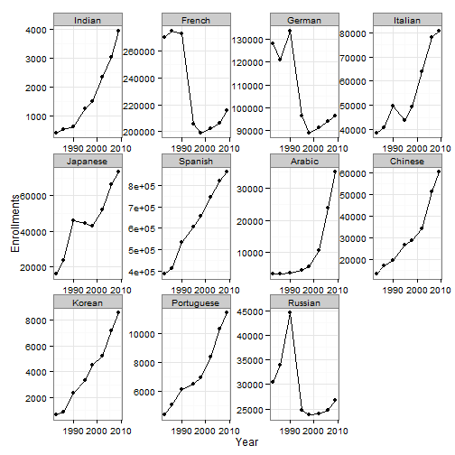

John Oliver, in his very first episode on HBO's new show, Last Week Tonight, talked about Indian elections and the near-absence of its coverage in US Television. In response to that show, Alyssa Ayres wrote in Forbes that US's attention on India was scant. This, according to her, is also reflected in the pattern of languages studied in the US. She presented data in a tabular format from the Modern Languages Enrollment Database for 3 survey years-2002, 2006, and 2009 to show that the number of students enrolling to study Indian languages were very few in comparison to other popular languages.
Assuming that the knowledge of a language helps one understand culture in a better manner and could also potentially provide an advantage in international relations and business, it was of interest to me to see how different languages fared across a longer time frame. Here, I look at the pattern of language enrollments from MLA surveys of enrollments in US institutions of higher education using ggplot2 and rely on rCharts to facilitate comparison between any two or more languages across and within different years. This post has been generated using slidify and the code to reproduce it, along with the code and data for different charts can be found on github.
Enrollment data for US higher education institutions were collected for 8 survey years spanning over two and half decades - 1983,1986,1990,1995,1998,2002,2006, and 2009. (One could go back in history further, but I chose to stop there for convenience.) Why only those years and not intermediate years? Those were the years when surveys were conducted and hence, data were provided only for those years.
Data were collected on the following languages - French, German, Italian, Japanese, Spanish, Arabic, Chinese, Korean, Portuguese, and Russian. Following Alyssa Ayres' procedure, data on multiple Indian languages were collected and then summed for a composite Indian language score for each year. These Indian languages include Bengali, Gujarati, Hindi, Hindi-Urdu, Kannada, Malayalam, Marathi, Punjabi, Tamil, Telugu, and Urdu. For the purposes of this post, I'll look at only the overall Indian language enrollment and not its individual components.
library(knitr)
lang = read.csv("languages.csv")
langmajor = lang[-c(2:12)]
kable(langmajor)
| Year | Indian | French | German | Italian | Japanese | Spanish | Arabic | Chinese | Korean | Portuguese | Russian |
|---|---|---|---|---|---|---|---|---|---|---|---|
| 2009 | 3929 | 215954 | 96270 | 80672 | 73328 | 862688 | 35083 | 60311 | 8511 | 11371 | 26814 |
| 2006 | 3034 | 206079 | 94181 | 78091 | 66076 | 821654 | 23956 | 51286 | 7145 | 10267 | 24810 |
| 2002 | 2323 | 201979 | 91100 | 63899 | 52238 | 745127 | 10584 | 34153 | 5211 | 8385 | 23921 |
| 1998 | 1506 | 199064 | 89013 | 49287 | 43141 | 656445 | 5505 | 28456 | 4479 | 6926 | 23791 |
| 1995 | 1232 | 205351 | 96263 | 43760 | 44723 | 606286 | 4444 | 26471 | 3343 | 6531 | 24729 |
| 1990 | 611 | 273116 | 133594 | 49824 | 45830 | 534143 | 3683 | 19427 | 2375 | 6118 | 44476 |
| 1986 | 522 | 275132 | 120920 | 40904 | 23454 | 411376 | 3417 | 16891 | 875 | 5071 | 33945 |
| 1983 | 408 | 270101 | 128140 | 38672 | 16127 | 386320 | 3441 | 13178 | 660 | 4397 | 30453 |
Before we see the patterns, we will need to convert our dataset into the long form. This, we perform using the reshape2 package. See how the dataframe format from the earlier table is modified to the following.
library(reshape2)
langmajormelt = melt(langmajor, id = "Year")
colnames(langmajormelt) = c("Year", "Language", "Enrollments")
kable(head(langmajormelt))
| Year | Language | Enrollments |
|---|---|---|
| 2009 | Indian | 3929 |
| 2006 | Indian | 3034 |
| 2002 | Indian | 2323 |
| 1998 | Indian | 1506 |
| 1995 | Indian | 1232 |
| 1990 | Indian | 611 |
kable(tail(langmajormelt))
| id | Year | Language | Enrollments |
|---|---|---|---|
| 83 | 2002 | Russian | 23921 |
| 84 | 1998 | Russian | 23791 |
| 85 | 1995 | Russian | 24729 |
| 86 | 1990 | Russian | 44476 |
| 87 | 1986 | Russian | 33945 |
| 88 | 1983 | Russian | 30453 |
library(ggplot2)
ggplot(langmajormelt, aes(x = Year, y = Enrollments)) + geom_point() + geom_line() +
facet_wrap(~Language, scales = "free") + theme_bw()

Interest in most languages has been on a rise. However, there were major drops in the interest in French, German, and Russian between 1990 and 1995.
We could bring in interactivity to the charts by using the nvd3 JavaScript library via rCharts. In the chart below, we begin by plotting the interest in Indian languages across different survey years. You could interact with it many ways.
np1 = nPlot(Enrollments ~ Year, group = "Language", data = langmajormelt, type = "lineChart")
## Error: could not find function "nPlot"
np1$set(disabled = c(F, T, T, T, T, T, T, T, T, T, T))
## Error: object 'np1' not found
np1$xAxis(tickValues = c(1983, 1986, 1990, 1995, 1998, 2002, 2006, 2009))
## Error: object 'np1' not found
np1$show("inline", include_assets = TRUE, standalone = TRUE)
## Error: object 'np1' not found
In the barchart below, we begin by comparing enrollments in Chinese and in Indian languages across all years. You could interact with it in the following ways.
np2 = nPlot(Enrollments ~ Year, group = "Language", data = langmajormelt, type = "multiBarChart")
## Error: could not find function "nPlot"
np2$set(disabled = c(F, T, T, T, T, T, T, F, T, T, T))
## Error: object 'np2' not found
np2$addFilters("Year")
## Error: object 'np2' not found
np2$chart(showControls = F)
## Error: object 'np2' not found
# np2$publish('np2',host='gist')
np2$save("np2.html", cdn = TRUE)
## Error: object 'np2' not found